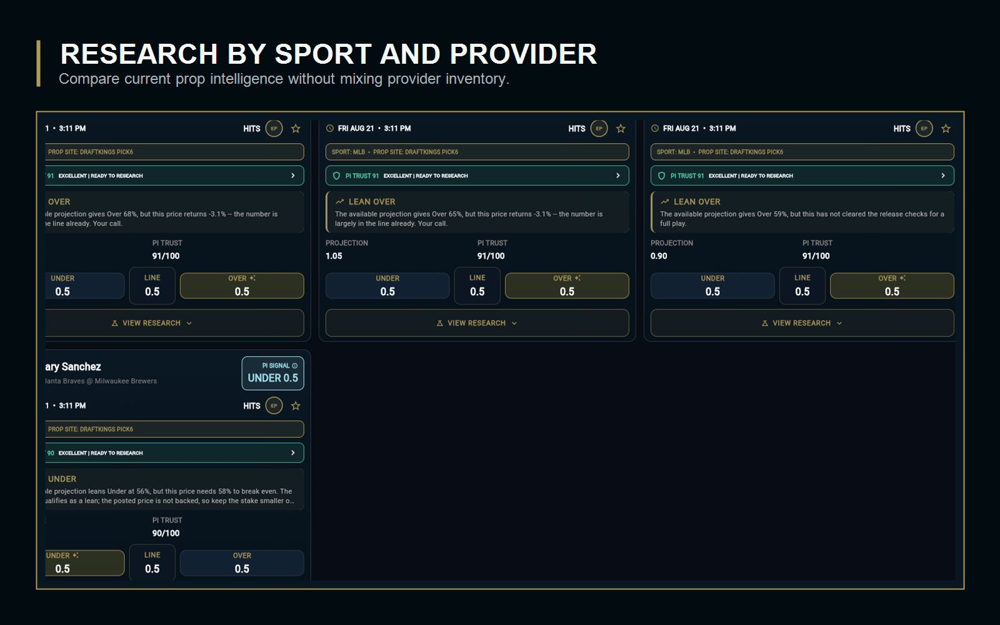
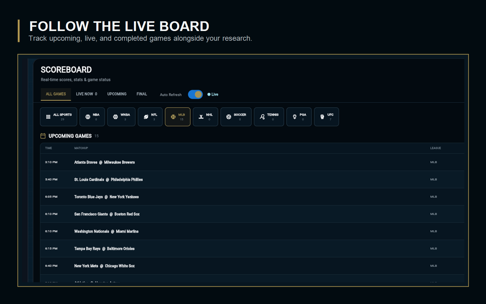
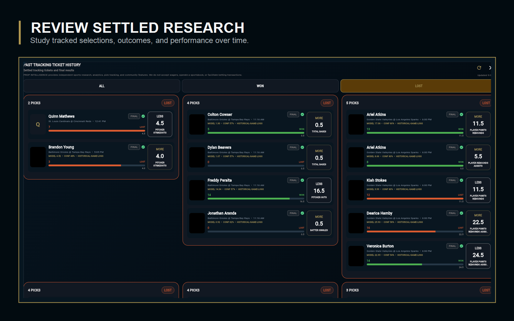

↻PI ADAPTIVE INTELLIGENCEPRO
Grades verified outcomes, learns from wins and losses, and promotes only calibration that improves on unseen results.
Every completed prediction becomes feedback for the next analysis. PI studies verified wins and losses, tests challenger calibration, and improves future confidence rankings.
PI connects live props, verified outcomes, model calibration, and future rankings in one transparent research system.
From live market discovery to settled research, every view stays connected.



Explore the features available inside PI Prop Intelligence.
Grades verified outcomes, learns from wins and losses, and promotes only calibration that improves on unseen results.
Find a player, team, matchup, or market quickly and focus the board on relevant research.
Monitor opening and current numbers, meaningful changes, freshness, and provider context.
Review availability changes and understand where injuries may affect roles and markets.
Read PI Trust, direction, projection context, confidence, and supporting research.
Ask focused research questions and move from market discovery to a specific player or prop.
Follow live, upcoming, and completed games across supported sports.
Track game progress alongside active research so changing conditions stay visible.
Open methodology, explainability, readiness signals, and advanced research context.
Organize selected research into a clear, reviewable ticket without facilitating transactions.
Keep active selections together, remove choices cleanly, and follow research through completion.
Review settled research history, outcomes, and win-loss percentages.
Customer-accessible memberships, presented clearly.
A professional adaptive sports-research platform built to turn every verified result into better-informed future analysis.
PI separates sports and providers, makes methodology visible, records settled performance, and only promotes learning that proves itself on unseen outcomes.